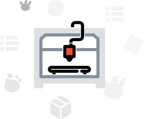
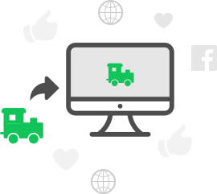
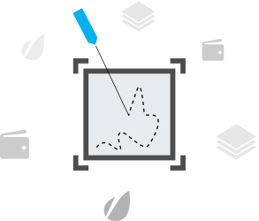

Impresión

Impresión en abs, pla, nylon, tpu (flexible), en color blanco, negro, transparente, azul, verde, amarillo, rojo, naranja, etc.
El tamaño de impresión es de 25 x 25 x 25 cm.
Escaneo

Contamos con un escaner de mesa de gran precisión para objetos de hasta 18 de diámetro por 25 de altura. Además poseemos de otro de mano, utilizado en objetos de mayor tamaño.
Como resultado se puede entregar el Modelo 3D o de ser necesario la pieza impresa a partir del mismo.
Grabado Láser

Corte o grabado de hasta 20 x 20 cm con una profundidad de hasta 3 mm en madera, corte de flexiglas, plástico, cartón, cuero, semicuero, y materiales de dureza similar.
Grabado en cuero, semicuero, plástico, madera, y materiales de la misma dureza. Además, de materiales pintados.
Gyroprint3D
Prestamos servicio a pequeñas empresas, como también al detal: profesionales y aficionados buscan nuestro apoyo en la elaboración de piezas de alta calidad para investigaciones, reparaciones o simplemente como regalos y decoración.
Nacimos gracias al apoyo del Parque Tecnológico Sartenejas en donde actualmente residimos y trabajamos.